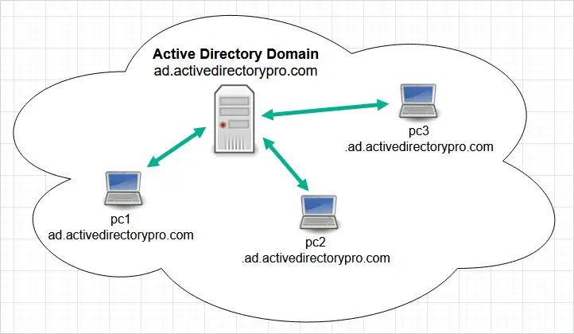
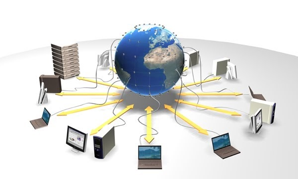
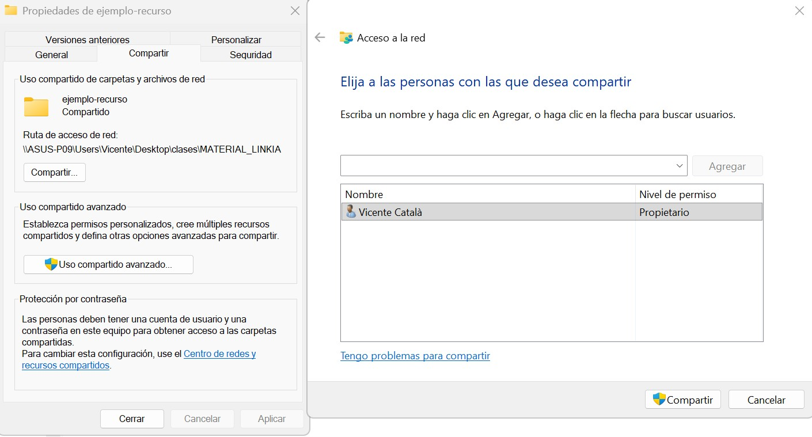
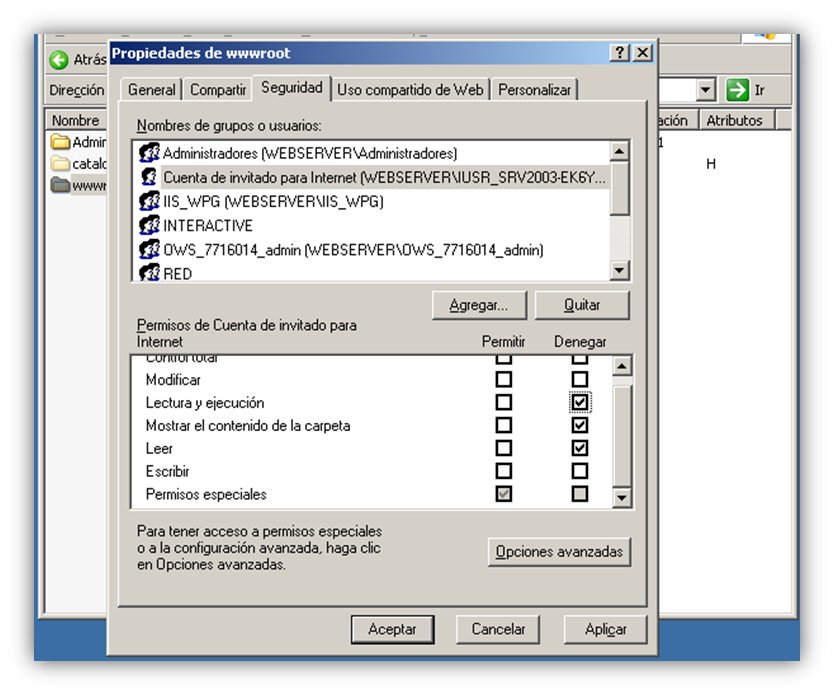
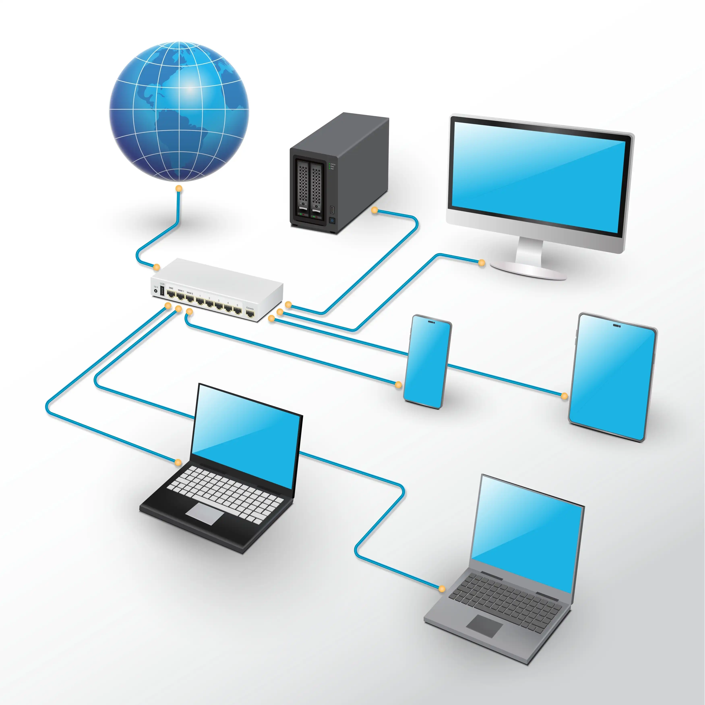
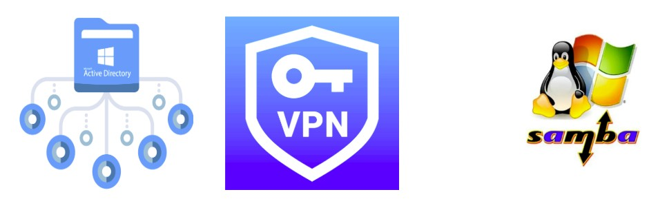

El trabajo de un administrador de sistemas
Los profesionales de la administración de sistemas en red se encargan de configurar, gestionar y mantener los recursos compartidos en una red. Esto incluye la gestión de usuarios, grupos, permisos, recursos compartidos y la seguridad de la red.
Principales tareas de un administrador de sistemas en red:
- Gestión de usuarios y grupos.
- Configuración de recursos compartidos.
- Seguridad y control de accesos.
- Mantenimiento y resolución de problemas.
Administración de dominios
En un entorno de dominio, los administradores gestionan usuarios, grupos y recursos de forma centralizada. Esto facilita la administración y mejora la seguridad al controlar el acceso a los recursos de la red.
Funciones clave en la administración de dominios:
- Creación y gestión de cuentas de usuario.
- Organización de usuarios en grupos para facilitar la administración.
- Asignación de permisos y derechos de acceso a recursos compartidos.
- Monitoreo y mantenimiento de la seguridad de la red.
En windows, la administración de dominios se realiza a través del Directorio Activo (Active Directory).

Gestión de usuarios, grupos, equipos y unidades organizativas
En la administración de sistemas en red, es fundamental gestionar correctamente los usuarios, grupos, equipos y unidades organizativas para garantizar un acceso seguro y eficiente a los recursos compartidos.
- Usuarios: cuentas individuales que representan a personas o servicios en la red.
- Grupos: colecciones de usuarios que comparten permisos y derechos de acceso.
- Equipos: dispositivos conectados a la red que pueden ser gestionados centralmente.
- Unidades organizativas: contenedores dentro del directorio activo que permiten organizar usuarios, grupos y equipos de forma jerárquica.

Recursos compartidos
Para que un entorno de red funcione correctamente, es necesario configurar recursos compartidos como impresoras, carpetas y unidades de red. Esto permite a los usuarios acceder a estos recursos desde cualquier dispositivo conectado a la red, facilitando la colaboración y mejorando la eficiencia.
- Impresoras compartidas: permiten a los usuarios imprimir desde cualquier dispositivo conectado a la red.
- Carpetas compartidas: facilitan el acceso a archivos y documentos desde diferentes dispositivos.
- Unidades de red: asignan letras de unidad a recursos compartidos para un acceso más fácil y rápido.

Compartición de directorio en Windows
Ejemplo de compartición de un directorio en Windows desde el menú de propiedades.

Seguridad y control de accesos
Para garantizar la seguridad de la red, es fundamental implementar un control de accesos adecuado. Esto implica asignar permisos y derechos de acceso a los usuarios y grupos de forma cuidadosa, asegurando que solo las personas autorizadas puedan acceder a los recursos compartidos.
Buenas prácticas para el control de accesos:
- Asignar permisos mínimos necesarios para realizar las tareas requeridas.
- Utilizar grupos para gestionar permisos de forma más eficiente.
- Revisar y actualizar regularmente los permisos asignados.
- Implementar políticas de seguridad para proteger la red contra accesos no autorizados.

Monitorización y mantenimiento
Un administrador de sistemas en red también se encarga de monitorizar el rendimiento de la red y realizar tareas de mantenimiento para garantizar su correcto funcionamiento. Esto incluye la resolución de problemas, la actualización de software y la implementación de medidas de seguridad para proteger la red contra amenazas.
Herramientas comunes para la monitorización y mantenimiento:
- Herramientas de monitorización de red para detectar problemas de rendimiento.
- Software de gestión de parches para mantener el sistema actualizado.
- Antivirus y firewalls para proteger la red contra amenazas.
- Utilidades de diagnóstico para resolver problemas de conectividad y rendimiento.
Integración de sistemas
En un entorno de red, es común que coexistan diferentes sistemas operativos y plataformas. La integración y gestión de estos sistemas de forma eficiente es fundamental para garantizar la interoperabilidad y el correcto funcionamiento de la red.
Desafíos de la integración de sistemas:
- Compatibilidad entre diferentes sistemas operativos.
- Gestión de recursos compartidos entre plataformas.
- Implementación de soluciones de seguridad que funcionen en todos los sistemas.
- Facilitación de la comunicación y colaboración entre usuarios de diferentes sistemas.

Herramientas de integración de sistemas
Dependiendo del entorno y los sistemas operativos involucrados, existen diversas herramientas y soluciones para facilitar la integración de sistemas en una red. Estas herramientas permiten gestionar recursos compartidos, controlar el acceso y garantizar la seguridad en un entorno heterogéneo.
Ejemplos de herramientas de integración de sistemas:
- Samba: permite compartir archivos e impresoras entre sistemas Windows y Linux.
- Active Directory (Windows server): facilita la gestión de usuarios y recursos en entornos mixtos.
- VPN: permite la conexión segura entre diferentes redes y sistemas operativos.
- Software de gestión de parches: ayuda a mantener todos los sistemas actualizados y seguros.
